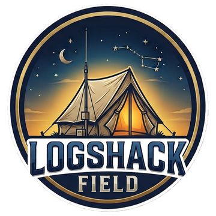
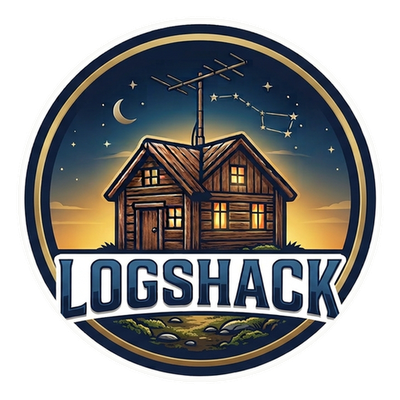

Il log per chi fa radio, in stazione e sul campo.
The log for radio amateurs, in the shack and in the field.
LogShack sul computer di casa, LogShack Field sul telefono quando sei in portatile. I QSO passano dall'uno all'altro con un tocco, sulla rete di casa.
LogShack on your home computer, LogShack Field on your phone when you're portable. Your QSOs move from one to the other with a tap, over your home network.
IU3VTV
Metanoia Studio, Italia
Metanoia Studio, Italy

Alla stazioneTo radio che leggereading this
| Data | Date | UTC | MHz | Modo | Mode | RST |
|---|---|---|---|---|---|---|
| 2026 | — | 14.250 | SSB | 59 |
LogShack Field
Android, telefono e tablet. Gratuito.
Android, phone and tablet. Free.
Per le attivazioni POTA, SOTA e WWFF, i contest in portatile, le uscite in montagna o la radio in giardino. Funziona anche dove non c'è campo.
For POTA, SOTA and WWFF activations, portable contests, mountain trips or the radio in the garden. Works where there's no coverage, too.
- QSO in un tocco, con ora UTC e banda automatiche
- Ricerca del nominativo su QRZ.com e HamQTH
- Riferimenti POTA, SOTA, WWFF e IOTA
- Spot DX e attivatori in onda, sulla mappa
- Avviso se una stazione è già nel log
- Bussola: dove girare l'antenna e a che distanza
- Propagazione e calendario dei contest
- File ADIF e sincronizzazione con LogShack
- One-tap QSOs, with automatic UTC time and band
- Callsign lookup on QRZ.com and HamQTH
- POTA, SOTA, WWFF and IOTA references
- DX spots and activators on air, on a map
- Warning when a station is already in your log
- Compass: where to point the antenna, and how far
- Propagation and contest calendar
- ADIF files and sync with LogShack

LogShack
Mac e Windows, per la stazione di casa
Mac and Windows, for your home station
🚧 Work in progress: lo stiamo ancora preparando e per ora non è scaricabile.
🚧 Work in progress: we're still getting it ready, and it isn't available to download yet.
Il log completo della stazione: legge frequenza e modo dalla radio, mostra gli spot sulla mappa e tiene il conto dei diplomi.
The complete station log: it reads frequency and mode from your radio, shows spots on the map and keeps track of your awards.
- Controllo della radio (CAT) con Hamlib
- Spot DX, POTA, SOTA, WWFF e IOTA sulla mappa
- Conferme LoTW, eQSL e Logbook di QRZ
- Log automatico da WSJT-X
- Diplomi DXCC e WAZ
- Propagazione, contest, radar meteo
- Radio control (CAT) through Hamlib
- DX, POTA, SOTA, WWFF and IOTA spots on the map
- LoTW, eQSL and QRZ Logbook confirmations
- Automatic logging from WSJT-X
- DXCC and WAZ awards
- Propagation, contests, weather radar
In preparazione: LogShack Pro. La tua stazione di casa dal telefono, ovunque tu sia: cambi frequenza, ascolti e parli, con LogShack Field.
In the works: LogShack Pro. Your home station on your phone, wherever you are: change frequency, listen and talk, with LogShack Field.